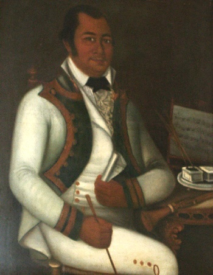
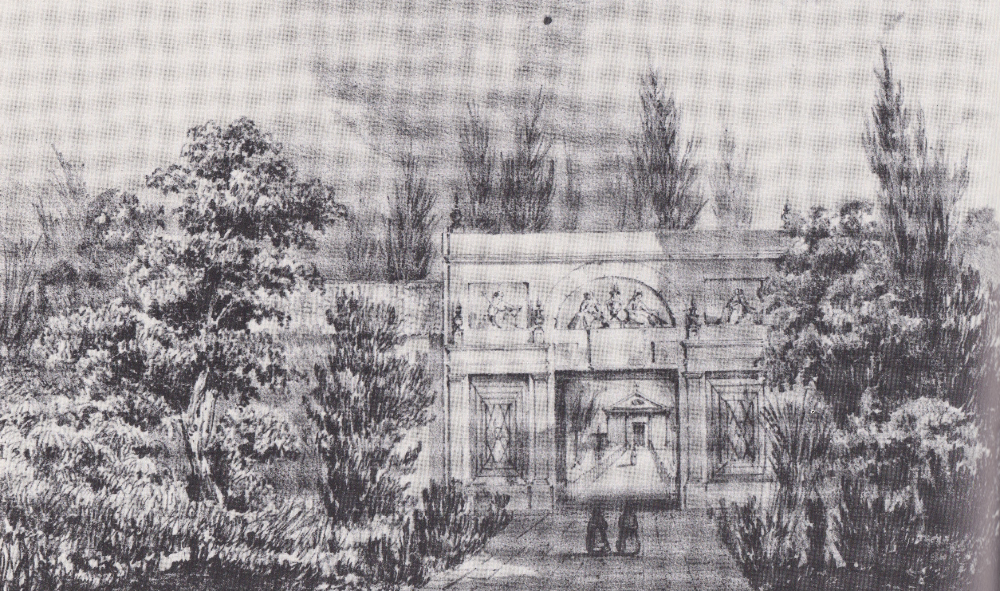

Introduction • Visual Culture of Turn of 19th-Century Havana • Race and Aesthetic Reform • The Image Gallery

Unidentified artist, detail, Calle Tacón 12, c.1762-1768, fresco or semi-fresco[?]
In this image gallery, we have compiled a sampling of the architecture, art, and other types of visual culture that composed part of Aponte’s visual landscape in early nineteenth-century Havana. The collection is by no means comprehensive, but is intended to provide the reader with a preliminary understanding of the visual environment with which Aponte may have engaged. We focus here on images and buildings that span Aponte’s lifetime, from roughly 1760 through 1812, but we do include some images produced after 1812 for the views they provide on urban structures prominent during his life. Aponte did not necessarily take direct inspiration from every artwork or object represented in this gallery. On one hand, we do know that Aponte represented buildings like El Morro fortress in various pages of his “book of paintings,” and visitors and inhabitants of Havana would have known El Morro as a remarkable component of the city’s defense system. Aponte’s representation of the building also conveys his understanding of the city’s military strength – a necessity for its role in the slave trade – and the connection of his own family’s military service to the city’s protection. On the other, we have no idea if Aponte saw a work exactly like José Nicolas de Escalera’s Family of the Count of Casa Bayona, but Havana’s colonial churches displayed many similar baroque paintings. In the descriptions that accompany each image we make connections to Aponte as appropriate.
Visual Culture of Turn of 19th-Century Havana
In Aponte’s Havana, artists provided the scenography of the city’s first theater (the Coliseo) and the designs for its first public cemetery. They painted religious canvases and secular portraits, decorated the ships produced in the Royal Shipyard, and completed the mural paintings that covered the walls of an astounding number of residences, churches, and even cabildo houses, or mutual aid associations for enslaved and free people of color. They also designed prints and created paintings for religious occasions, imperial celebrations, and scientific expeditions. Aside from some foreign-born artists and local white creoles, the majority of these artists were free men of color who came to dominate the field of visual artistic production.

Vicente Escobar, Portrait of José Jackes Quiroga, n.d., oil on canvas
Around the time of Aponte’s birth, most visual arts flourished within the confines of Catholic churches and convents managed by the various mendicant orders operating in the city. Like elsewhere in the colonial Americas, Catholic missionaries taught local students the arts of drawing and painting; in the case of colonial Havana, these students tended to be free people of color. Later, during the British invasion of 1762, British army officers Elias Durnford and Philip Orsbridge produced widely known views of the actual siege as well as buildings and spaces in Havana. The views were ultimately printed (and painted by other artists like Dominic Serres) in London and sold to audiences there. Foreign artists would continue to travel to work and live in Havana during Aponte’s life.
By 1791, seven printing houses operated in Havana. They printed newspapers, Catholic devotional imagery and prayers, the official edicts and texts required by the colonial administration, and scientific natural histories. Foreign illustrators completed drawings for natural history texts like Antonio Parra’s Descripción de diferentes piezas de historia natural las mas del ramo maritimo: representadas en setenta y cinco laminas or the botanical expedition of the Real Comisión de Guantánamo. The increase in natural history prints during this period was a direct result of the Spanish Enlightenment and the interest in the taxonomic classification of the natural environment. Further, local artists such as Fernando Baez contributed to the production of a Havana-based print market through creating images of popular religious figures like San Judas Tadeo.
Mural paintings were likely the most widespread visual art of the time, although their authors remain unidentified. Other painters, however, like José Nicolás Escalera, Vicente Escobar, and Juan del Río made names for themselves as painters of religious works (Escalera) and portraits (Escobar and del Río). Escalera was white, while Escobar and del Río were men of color. Escobar, interestingly, became the first known artist to travel from Cuba to Spain for artistic study. He pursued his portrait practice in Havana and became the most prolific portrait painter at the time. We still have little information about how his contemporaries organized themselves and viewed their work, but a few glimpses from the archive offer some clues. In 1770, a self-identified group of the “professors of the liberal art of painting,” Escalera among them, issued a letter that protested regulations that required guild formation. The painters’ actions imply that they viewed their art as fine and noble art. Another group of painters, however, did present a petition to form their own guild the same year. Both groups responded, albeit differently, to the regulations on guild formation that formed part of the Spanish urban refortification and civic reorganization that followed in the wake of the 1762 British occupation of Havana. The occupation also transformed the built environment of Havana during Aponte’s lifetime.
Following the invasion, the Bourbon Spanish crown implemented a plan to “beautify” the city while also strengthening its defenses. The plan included the extension of the wide Alameda de Extramuros to the west of the city walls and the Alameda de Paul along the eastern seawall. The construction of the Casa de Correo and the Casa de Gobierno on the Plaza de Armas, along with the Castillo de la Cabaña across the bay, cemented Havana’s status as central to the trade of products like sugar and coffee as well as the enslaved individuals that made them possible. All of these additions to the built environment shared the classicizing influence of Enlightenment thought, which extended to the visual arts particularly through the 1803 arrival to Havana of the Spanish bishop Juan José Diaz de Espada.

Frédéric Mialhe, View of the General Cemetery of Havana, 1860s, lithograph
The arrival of Espada coincided with growing discourses on the necessity of “good taste” and its civilizing effect- a clear rebuke to black artists and a response to the growth of slavery. Espada oversaw an aesthetic reformation of the visual arts in Havana and advocated for a more restrained neoclassical style that was also supported by local elites and officials. Espada directed the Italian artist José Perovani, then in Havana, to paint new canvases for the cathedral and design bas-reliefs for the entryway arch to the new general cemetery. With the arch, Espada constructed the island’s first neoclassical structure. He also participated in the foundation of the Island’s first fine arts academy, the Academia de San Alejandro, in 1818. The school sought to reclaim visual artistic production from the hands of the black painters who had dominated the field. However, the exclusion of these students does not mean that black artists did not participate in the stylistic or philosophical imprint of neoclassicism in Havana. For certain, the portraitist Vicente Escobar had studied at the Academia de San Fernando in Madrid under towering figures of neoclassical painting, and he brought that experience to Havana. Undoubtedly, however, the deployment of neoclassical aesthetics in Havana did seek to reclaim cultural ground from black artists. These artists did not necessarily always subscribe to European models, but they were also not disconnected from them. Often times, they created something entirely new. Aponte’s “book of paintings” demonstrates this for us. Aponte represented history – a new black diasporic history – to moral effect. Aponte, as such, followed in the footsteps of many history painters before him, but he illustrated history through employing radically new methods of mixed media and collage. Aponte’s invention, even though lost, still inspires new interpretations through the textual descriptions he left behind.